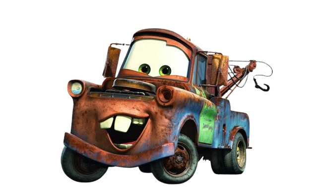
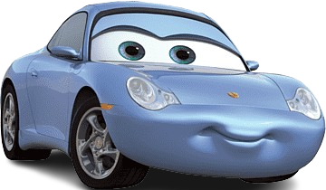

KATCHAU.
MCQUEEN

Relâmpago McQueen (Owen Wilson) é um carro de corridas ambicioso, que já em sua 1ª temporada na Copa Pistão torna-se um astro. Ele sonha em se tornar o 1º estreante a vencer o campeonato, o que possibilitaria que assinasse um patrocínio com a cobiçada Dinoco..
DINOCO

O Rei é um personagem do filme Carros da Disney Pixar. Ele é um ex-piloto da equipe de corrida Dinoco e um mentor de Lightning McQueen. Características Campeão da Piston Cup sete vezes, Tem um sotaque sulista, É um mentor de Lightning McQueen, É conhecido por ser arrogante e rude, Dá críticas construtivas a Lightning. .
MATE
O melhor amigo de Relâmpago McQueen, Tow Mater conta as mais loucas histórias que supostamente já viveu no passado, dentre elas estão as vezes em que se transformou em um carro de bombeiros e trabalhou como astronauta.
SALLY
Sally Carrera Sally é uma promotora de Radiator Springs e também, a proprietária do Motel Cozy Cone e namorada do McQueen apartir do segundo filme da série de filmes 'Carros'.
Francesco Bernoulli cresceu à sombra do famoso circuito de corrida de Monza na Itália, onde ele e seus amigos iam às escondidas para a pista e correr a famosa Pista de Alta Velocidade. Ele era um vencedor instantâneo no circuito amador e logo se tornou um campeão de Fórmula 2 internacional.